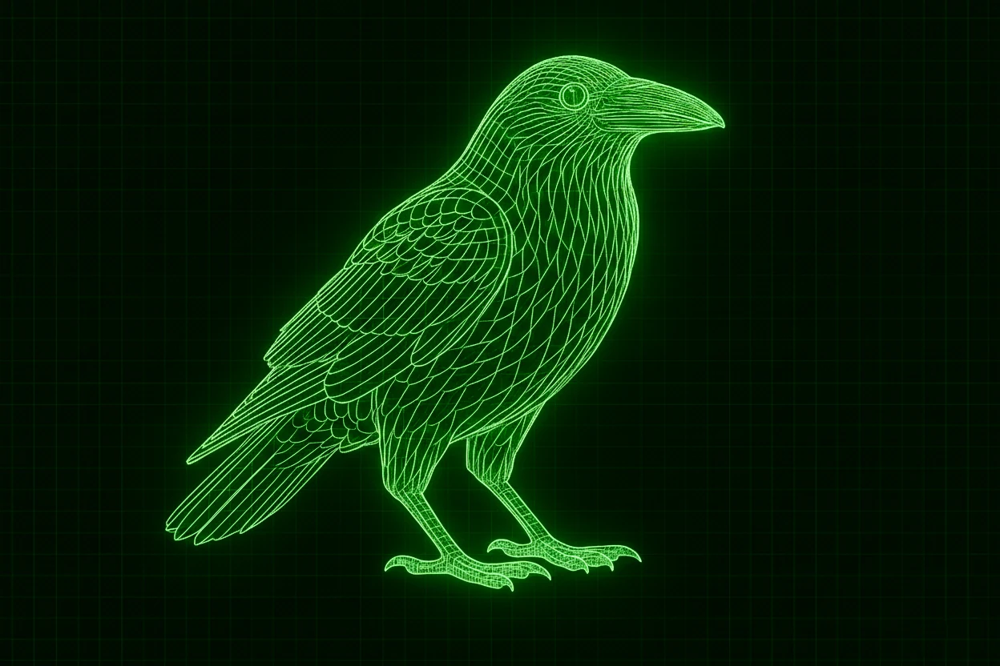

Knowledge / misinformation
Raven
Corvus corax
HEAD
The head holds the question of knowledge: what is received, verified and understood.
SIMULATION
GÖZLEM DEFTERİ /
Kaynak yaklaşık 20 dakikada bir çağrılır. Akan kaynak notları yeni ölçüm anlamına gelmez.
SIGNALAwaiting connection
MEASUREMENT——
UPDATEDNo measurementActual observation time
SOURCENot connectedSource-defined update interval